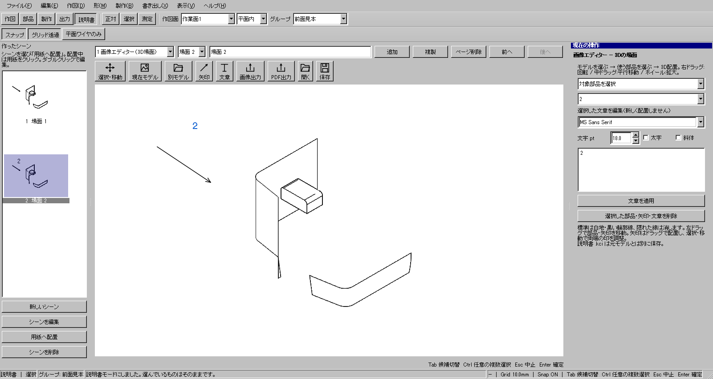
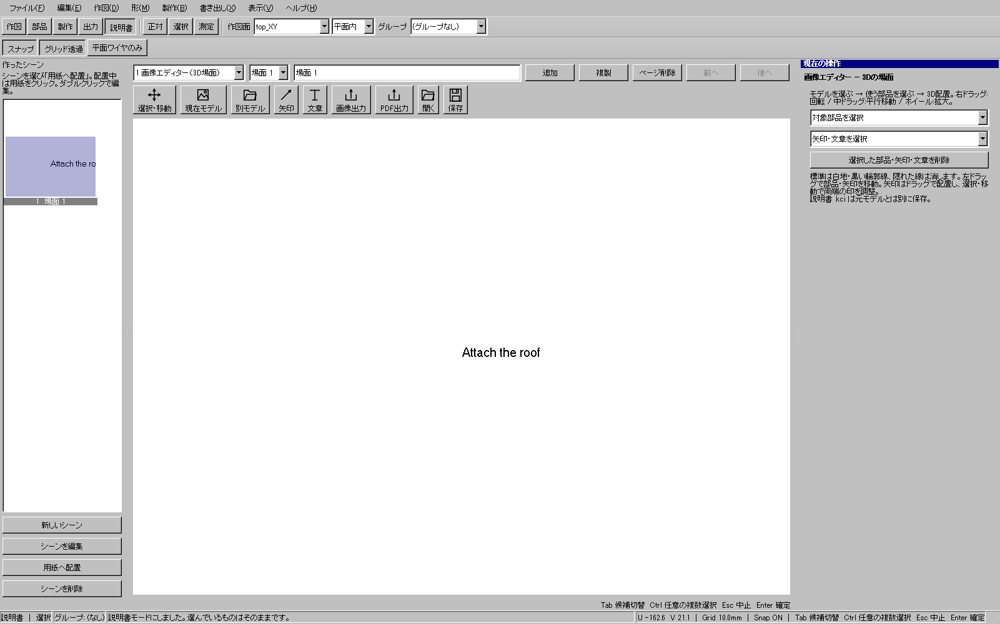
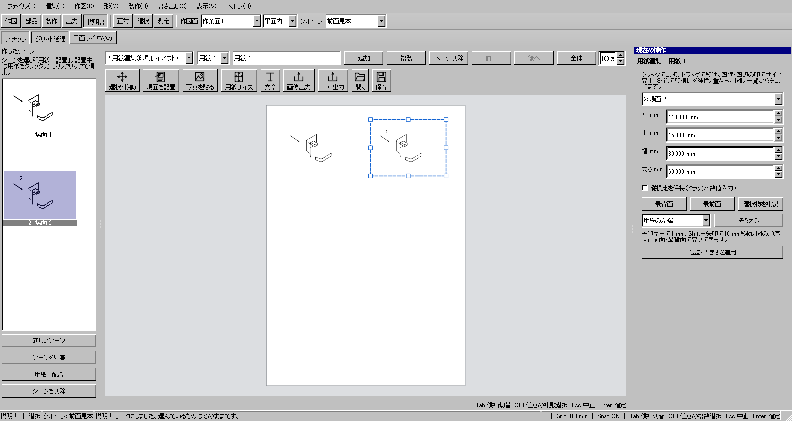
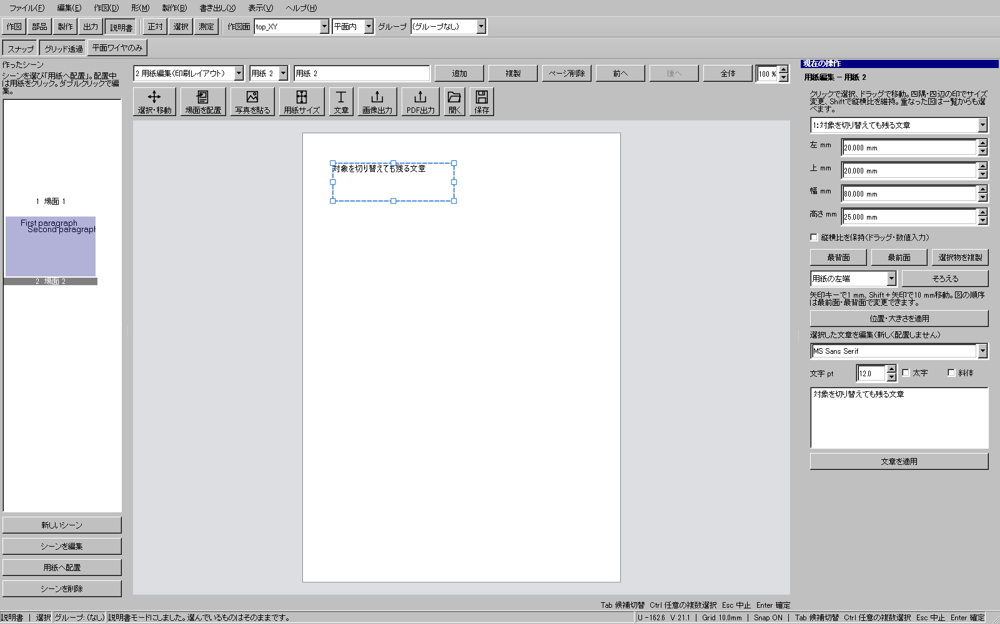
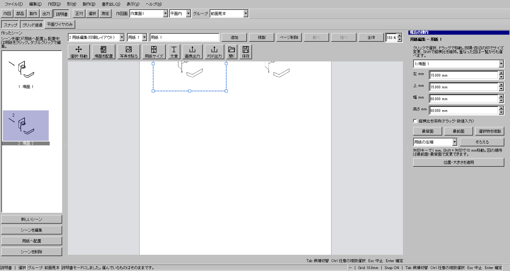

3D場面から組立説明書を作る
最初に説明用の3D場面を作り、次に印刷用の用紙へ配置します。場面は画像へ変換せず、3Dの部品配置・視点・矢印・文章を保持します。用紙へ置いた図は場面のUUID参照なので、場面を編集すると更新されます。元のCADモデルは変更しません。
以下は2026-10-19のWindows版にQtのクリック・キーイベントを送って確認した実画面です。115面.kcd2の取り込み例と、文章編集を確認する小さな試験例を区別して示します。全手順をOSのマウスだけで操作した記録ではありません。
1 画像エディターへ入る
- CADで説明に使うモデルを開きます。
- 上部の「説明書」を押します。
- 中央上段で「1 画像エディター（3D場面）」を選びます。左側はCADの一覧から「作ったシーン」の縮小画像一覧へ切り替わります。
- 上段の見出し欄に「屋根の取り付け」など場面名を入れます。
左の「新しいシーン」または画像エディター上段の「追加」は空の場面、「複製」は現在の部品・視点・注記を引き継いだ別場面です。複製後に部品を動かして次の工程を作れます。
2 モデルと使う部品を選ぶ
- 「現在モデル」を押します。別ファイルを追加する場合は「別モデル」を使います。
- 右の検索欄へ部品名の一部を入力して候補を絞れます。一覧で使う部品にチェックを入れます。一覧の行を押すと対応する要素を強調します。
- チェックを変えると表示も更新されます。「モデル全体を3D表示」は確認用で、取り込みチェックを変えません。
- 「この場面に配置」を押します。
チェックしただけでは場面へ確定しません。「一覧を全て使う／外す」は検索で表示中の行だけを変更します。使用数と全要素数を確認してから確定してください。面・ソリッドがあるモデルではワイヤーは最初は未チェックです。ワイヤーだけのモデルも読み込めます。候補は512要素、1場面へ確定できる要素は128個までです。ワイヤーが多数ある場合はまとめた候補になります。
3 部品を離して組立位置を示す
「選択・移動」を押し、部品をクリックしてドラッグします。選択部品の数値移動・回転は右ペインへ出ます。移動・回転は現在状態への加算です。適用後は数値欄が0へ戻り、同じ操作を続けて押しても二重に移動しません。
| 操作 | 結果 |
|---|---|
| 右ドラッグ | 視点を回転 |
| 中ドラッグ | 視点を平行移動 |
| ホイール | 拡大・縮小 |
| 全体表示 | 部品だけでなく矢印・文章の位置も表示範囲へ収める |
4 矢印と文章を追加する
- 「矢印」を押し、始点から先端へドラッグして離します。始点・終点の2クリックでも置けます。
- 「選択・移動」へ戻り、矢印を選ぶと両端に印が出ます。端だけを動かすか、本体をドラッグして全体を動かします。
- 「文章」を押し、右欄へ文章を入力します。改行、フォント、大きさ、太字、斜体を指定できます。
- 場面をクリックして文章を置きます。

5 既に置いた文章を直す
- 「選択・移動」に戻ります。
- 右の「矢印・文章」一覧か、場面の文章をクリックして対象を選びます。
- 「選択した文章を編集」の欄で文章やフォントを変えます。「文章を適用」のほか、対象・操作の切替や保存でも編集中の文章を取り込みます。
新しい文章を追加する「文章」ツールと、既存の文章を直す選択欄は別です。キャンバスをクリックした後のDeleteは図を削除し、Ctrl+Zは図の変更を戻します。文章欄に入力中のCtrl+Z/Deleteは文章編集へ使えます。

6 用紙を作る
- 上段を「2 用紙編集（印刷レイアウト）」へ切り替えます。
- 「用紙サイズ」を押し、A4・A3・A5等または自由サイズを選びます。
- 必要なら「縦・横を切り替え」を押します。
- 複数ページにする場合は上段の「追加」「複製」を使います。
画像エディターの場面数と印刷用紙の枚数は独立しています。1枚の用紙に複数の場面を置けます。
7 左のシーン一覧から用紙へ配置する
- 上段を「2 用紙編集（印刷レイアウト）」にします。画像エディターから直接進む場合は、左の「用紙へ配置」でも移れます。
- 左の「作ったシーン」で使う縮小画像を1つクリックし、「用紙へ配置」または上の「場面を配置」を押します。
- 用紙へカーソルを移動し、配置の下見を確認してクリックします。
- 配置ツール中は別の縮小画像を選ぶと配置元を切り替えます。同じシーンは用紙を続けてクリックして複数置けます。配置を終えたら「選択・移動」またはEscを押します。選択・移動中の縮小画像クリックだけでは図を追加しません。
- 「選択・移動」へ戻り、用紙上の図をドラッグして移動します。四隅・四辺の印でサイズを変え、Shiftまたは右欄の「縦横比を保持」で比率を保てます。
シーンの内容を直すときは左の「シーンを編集」、または縮小画像をダブルクリックします。3D場面のUUID参照を維持するので、編集した内容は用紙上の図にも反映されます。用紙上の図のダブルクリックでも元のシーンへ戻れます。
用紙上で図が重なって選びにくい場合は右の対象一覧を使います。位置・大きさはmmで入力して適用できます。左の一覧は配置する元のシーン、右の対象一覧は既に用紙へ置いた図を選ぶ場所です。

8 写真・説明文を入れる
「写真を貼る」でPNG/JPEGを選び、用紙上へクリックして置きます。写真も移動・サイズ変更ができます。「文章」で複数行の説明文を入れ、用紙へクリックして置きます。選択・移動で文章をダブルクリックすると、その場で入力できます。改行はEnter、確定はCtrl+Enterまたは枠の外をクリック、編集だけの取消はEscです。右欄でも文章・フォント・大きさ・太字を変えられます。


9 用紙を拡大して、図をそろえる
- ホイールまたは上段の倍率で25〜800%へ拡大・縮小します。中ボタンでドラッグすると用紙の表示位置を動かせます。「全体」で用紙全体へ戻ります。これらは印刷寸法や配置位置を変えません。
- 「選択・移動」で図・写真・文章をクリックします。枠の中をドラッグして移動、四隅・四辺の印でサイズを変更します。矢印キーは1 mm、Shift＋矢印は10 mm移動です。
- 右欄の「用紙の左右中央」などを選んで「そろえる」を押します。位置・サイズを厳密に決めるときはmm欄から指定できます。
- 重なり順は「最前面」「最背面」、同じ図を増やすときは「選択物を複製」です。用紙上の右クリックにも複製・重なり順・削除があります。
- 場面・用紙自体の順序は上段の「前へ」「後へ」で変えます。場面の参照は維持されます。


10 保存・画像・PDFを使い分ける
| 操作 | 保存するもの |
|---|---|
| 保存／Ctrl+S | 編集用KCI。既存の保存先へ上書きします。初回だけ保存先を指定します。 |
| ファイル→名前を付けて保存 | 別名のKCI。 |
| 画像出力 | 現在の場面または用紙。幅・高さとPNG/JPEG等の形式を選択します。 |
| 画像エディターでPDF出力 | 現在の場面をA4横へ収めた1ページ。 |
| 用紙編集でPDF出力 | 各用紙の寸法・向きに従う全ページ。 |
空の場面・空の用紙だけではPDFを出しません。ファイル→新規は説明書を新しく始めます。未保存変更は保存・破棄・取消を選べます。
11 不要な図やページを消す
用紙上の図・文章・矢印は選択してDelete、用紙自体は上段の「ページ削除」を使います。シーンを削除するときは左で選んで「シーンを削除」を押します。左一覧にフォーカスがあるときのDeleteもシーン削除です。削除対象名と参照している図の件数を確認して削除します。場面を削除すると、その場面を使っている用紙上の図も同時に削除します。Ctrl+Zで場面と配置図をまとめて戻せます。最後のページを削除した場合は、新しい空の場面・用紙を残します。
Escは未確定の矢印やドラッグを取り消します。用紙では選択・移動へ戻ります。直接文字編集中は、その文章の未確定の編集を取り消します。